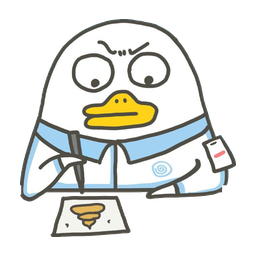
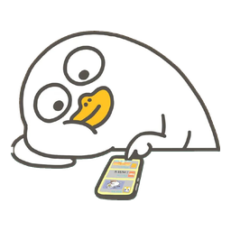
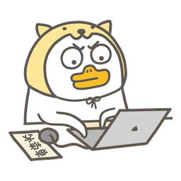
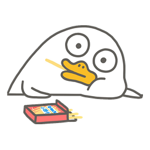

DUCKYO / 日常小事
让每个小行动，多一点小鸭陪伴
专属图标 × 原图空状态贴纸 · 第一版设计稿
01 / 四个主要入口
统一圆角线条 · 下方依次为常态 / 选中 / 深色 · 实际 24px
打卡圆角便签 · 完成勾选
24px
激励礼物袋 · 蝴蝶结
24px
统计圆润柱形 · 上升趋势
24px
我的圆形头像 · 柔和肩线
24px
02 / 六款打卡图案
功能含义优先，图案互不重复
成长向上嫩芽
24px
阅读打开的手账
24px
喝水日常水杯
24px
行动笔直小路 · 一步一步向前
24px
目标命中圆靶
24px
阳光温暖太阳
24px
03 / 我的空间
收件箱、已归档、我的物品使用同一套线条
收件箱一封来信
已归档收纳抽屉
我的物品打开的物品盒
04 / 四张原图贴纸
不重绘表情与道具 · 只裁切、透明抠图、缩小 · 256px PNG

实际显示 64px

实际显示 64px

实际显示 64px

实际显示 64px
05 / 透明卡面的空状态
贴纸 64px · 文字与操作始终清楚 · 不增加背景模糊
从第一项打卡开始
记录一个想坚持的小行动。
暂时没有消息
新消息会出现在这里。
暂时没有归档打卡
归档后，历史记录会留在这里。
你的物品，慢慢收集
获得的装扮与奖励会放在这里。
06 / 手机搭配示意
展示贴纸、卡面与导航的比例关系
9:41◔ ▰
一点行动，一点成长
今日打卡
+从你的第一项打卡开始
添加一件想坚持的小事。
9:41◔ ▰
‹
已归档打卡
给暂时停下的行动，留一个位置
暂时没有归档打卡
归档后，历史记录会留在这里。
以上为比例示意稿，只评审图标和贴纸；背景、卡片透明度、导航容器与按钮形状沿用现有方向。